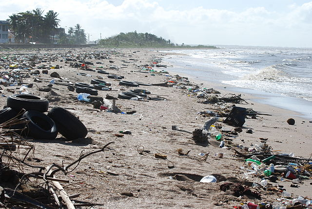
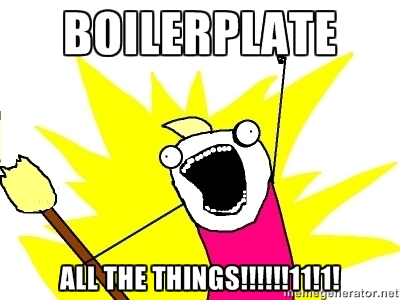

In computing, a plugin is a software component that adds a specific feature to an existing software application. When an application supports plugins, it enables customisation.
Wikipedia
(function($) {
$.fn.myAwesomejQueryPluginThatIsJustAMethod = function() {
// ...
};
})(jQuery);(function($) {
// ...
})(jQuery);
$.fn.doSomething = function() { /* ... */ };
$.fn.doSomethingElse = function() { /* ... */ };$.fn.do = function(thing) {
switch (thing) {
case 'something': /* ... */ break;
case 'something-else': /* ... */ break;
}
};$('div').firstAction().secondAction().thirdAction();$.fn.firstAction = function() {
// something awesome
return this;
};$.fn.myPlugin = function() {
return $.each(function() {
// no requirement to return anything here
});
};$('div').myPlugin(/* ... */);$.fn.myPlugin = function(options) {
var defaults = {
color: 'green'
};
var settings = $.extend({}, defaults, options);
return this.each(function() {
this.css('color', settings.color);
};
};$('a').myPlugin({
color: 'red'
});
/